前言
该回学校了！这篇博客讲述的是飞往天津后又溜去北京玩最后回学校的流水账！
网上找了个这样一个俗语，刚好涵盖了北京、天津、保定三个城市，就拿它当标题了！
北京、天津、保定是古时天子脚下的三个主要城市。按照明、清的行政名称，应该称为“北京城、天津卫、保定府”。
明、清以来定都北京，不少达官贵人居于此地，这些达官贵人当然不好惹，久而久之练就出北京人比较世故、圆滑的特性，于是便有“京油子”的称号。
天津人脑筋灵活，嘴巴乖巧。过去相声演员先要经过天津观众的认可，才敢放开手脚闯荡江湖。天津人说话诙谐，幽默，因而得出“卫嘴子”的称号。
而“保定府的狗腿子”，有人认为“狗腿子”其实应该写作“钩腿子”，保定人崇文尚武，爱好摔跤，“钩腿子”正是保定摔跤的一种技法，后来也有人误写成“狗腿子”。
“京油子，卫嘴子，保定府的狗腿子”，其实还有后半句，就是“十个京油子斗不过一个卫嘴子，十个卫嘴子斗不过一个狗腿子。”
大意就是北京和天津人比较会说，保定人直接开打😠！
正文
5.15 天津博物馆-五大道
05:28 日出
在家待了近一个月，又得走了！没有论文压力的一个学期，走的时候心情不再那么压抑了😭。
刚好姑姑也是差不多时间坐飞机，于是一起走。
06:12 登机牌
购买机票 厦门航空 MF8033：07:20 福州长乐-10:10 天津滨海 T2，￥456。
06:20 排队中
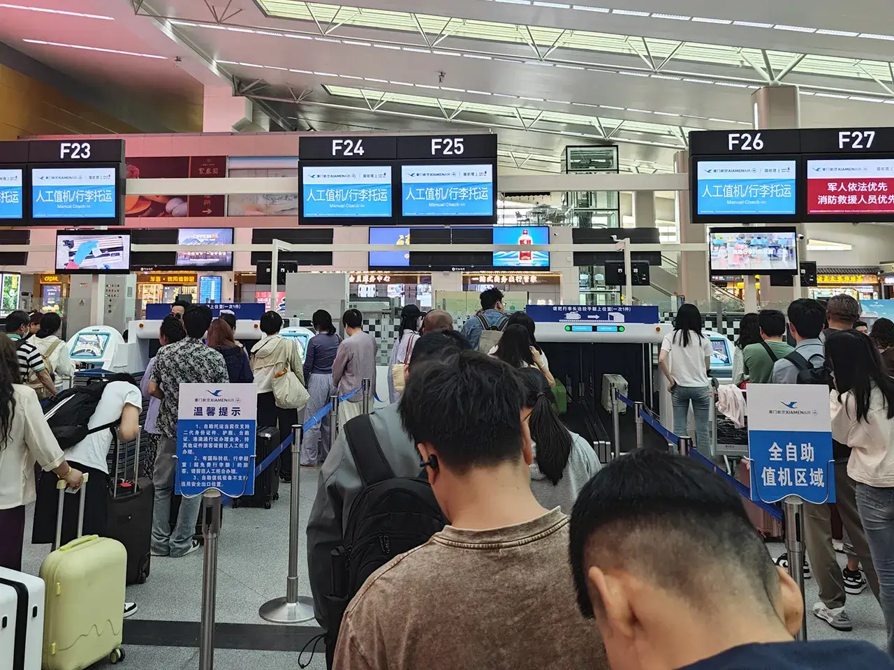
本来觉得时间挺充裕的，还可以跟姑姑聊几句再过安检，结果办理托运行李排个半死……折腾完也没啥时间了，就只好跟姑姑说了个再见直接进安检了🤧。
06:45 蛇年大吉！
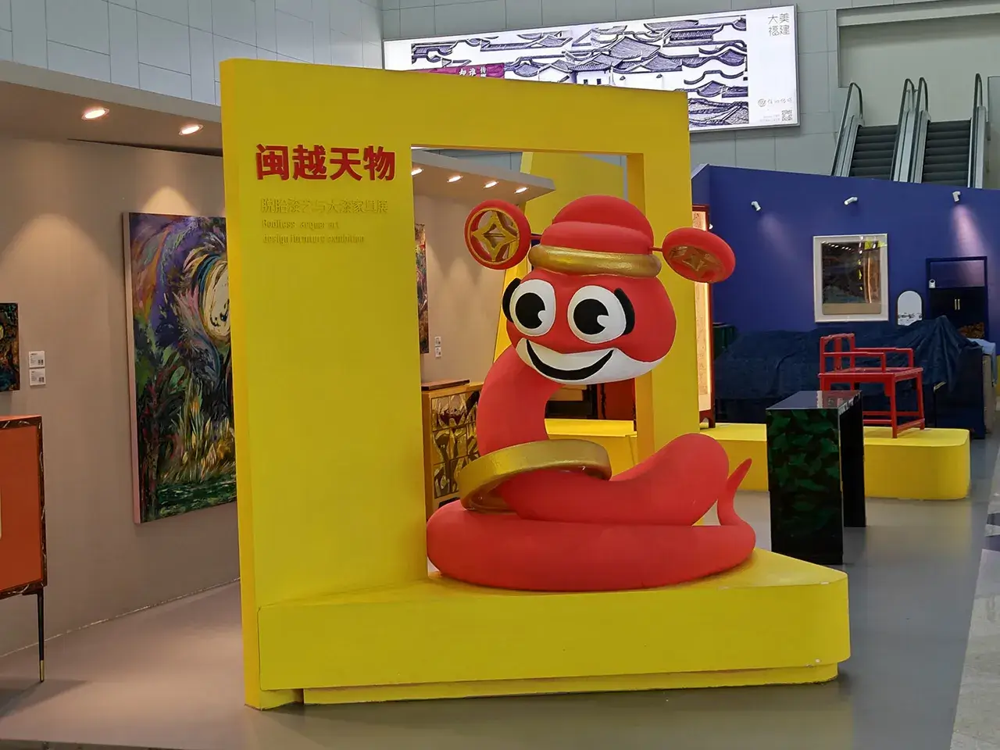
基本上刚一安检完就被要求登机了。
07:25 我要起飞了！
飞机上看长乐还挺繁华的。
09:03 山东济南
每次到济南时，都会说要准备降落了，请收起小桌板，厕所关闭~
济南的三角形大水库太好识别了……
09:35 津沽棒
远处的高楼突破了云层。到天津了！
10:50 天津站
之前预定的公寓就在天津站旁边，三个晚上￥504。结果天津站太大了走迷路兜了好久🤧……
11:08 津湾广场
绕了老半天终于绕到天津站南广场了🤧。
11:21 躺！
起得太早加上舟车劳顿一上午有点困，所以决定先安定一会儿下午再说！
11:51 大包子
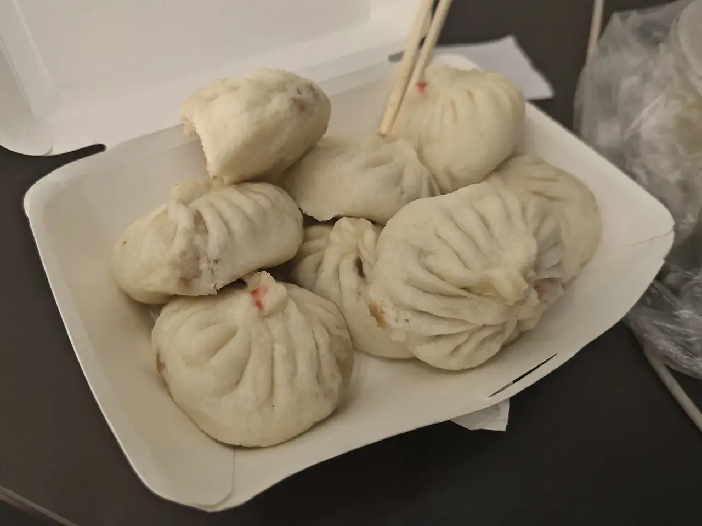
洗完澡不想下楼，就点外卖，狗不理包子价格惊人！还是点别家的包子吧。公寓在 4 楼，外卖员到了不肯上楼，只好自己再穿着拖鞋跑下去拿😭。
天津人饭量惊人！根本吃不完，而且不好吃，吃了一半扔了🤐。
13:38 解放桥与世纪钟
焕然一新！
之前跟 pro 神来看世纪钟时还没有上色呢，也没有走过解放桥。
13:45 津湾广场
这个配色很像武汉的光谷。
看着经济很一般，入驻的商家寥寥无几。拿了杯瑞幸去赶地铁了。
13:49 消防用水
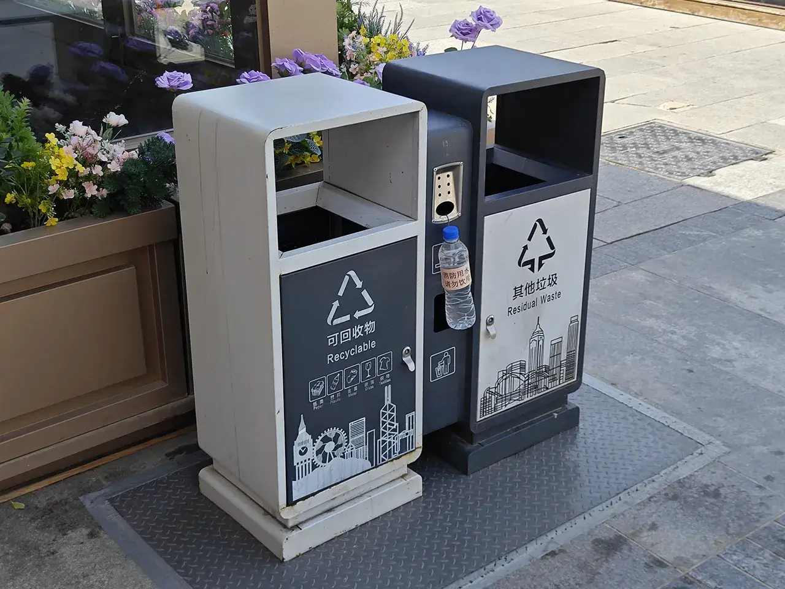
每个垃圾桶中间都绑着一瓶矿泉水，上面还写着“消防用水，请勿饮用”🤔。
13:54 走！
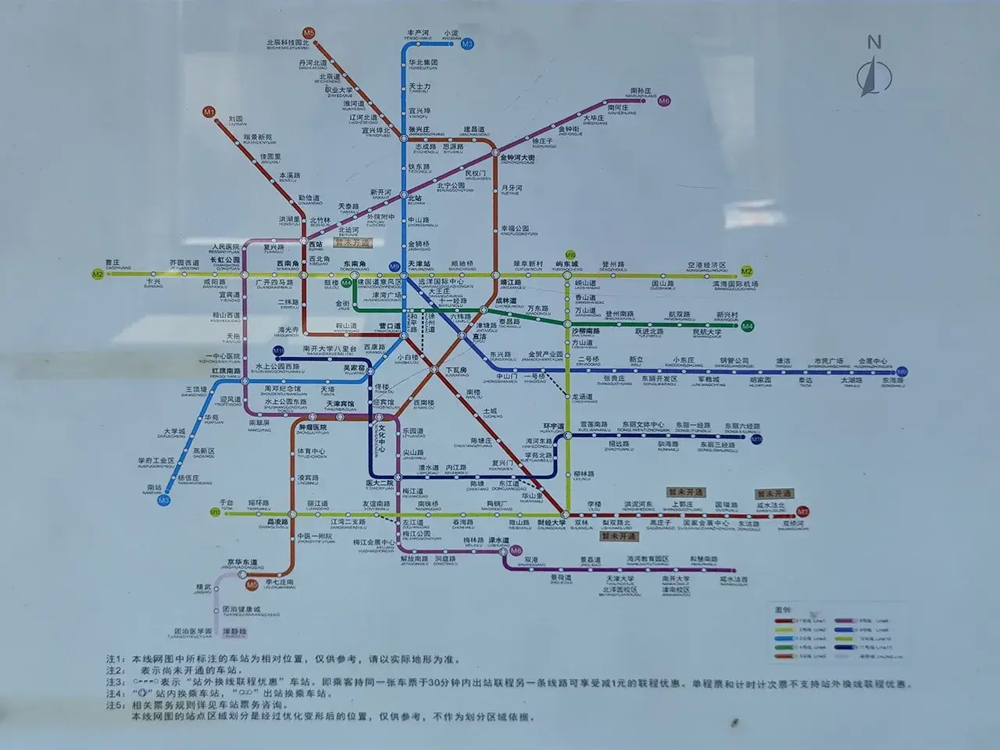
看一下天津的地铁线路，密度尚可，不如郑州😇。
因为之前跟 pro 神在天津把该玩的都玩过了，所以就选了个没去过的地方——天津博物馆了。津湾广场站-3 号线-吴家窑站-11 号线-文化中心站。
14:35 天塔
我又迷路了！兜了个圈子😪。
14:39 天津人文的由来🤩
天津地区的人类活动已有上万年的历史。在漫长的岁月里，随着人类足迹从北部山地向河畔海滨的延伸，这一地区经历了从不毛之地到运河城市的曲折过程，融合了多种文明的发展成就。近千年来，河、海交汇与毗邻首都的地理位置是影响古代天津发展的关键因素，由此产生了军队的屯驻、人口的聚集和漕运枢纽的形成、商品流通的兴旺。古代天津城市的不断发展为近代天津的崛起创造了条件。
emmm 这个地方其实没什么历史，展馆里基本也是故事叙述而不是展出文物为主。估计是很长一段时间这里都是海的缘故吧。
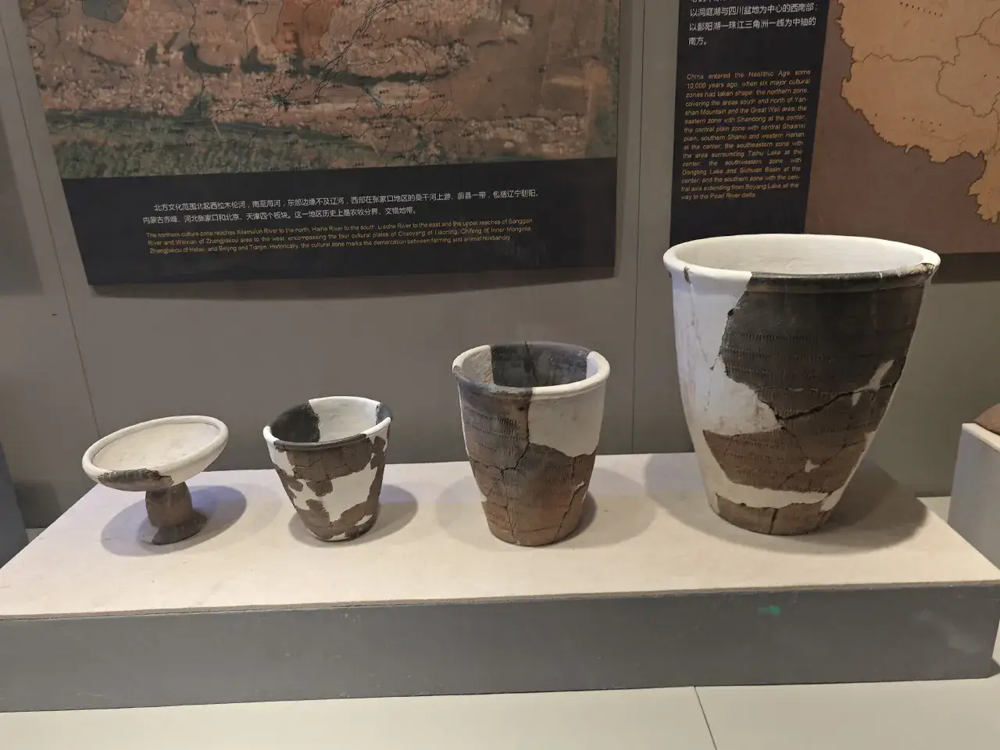
14:42 东汉
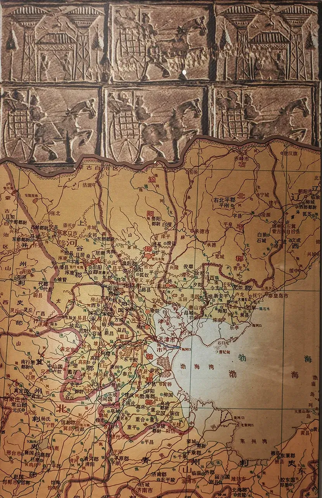
公元前 202 年，西汉建立。西汉初年，今静海、大港、津南、西青属勃海郡的东平舒和章武县管辖。海河以北分属渔阳郡的泉州、雍奴二县和右北平郡的无终县管辖。
原来这地方曾经还叫过泉州……
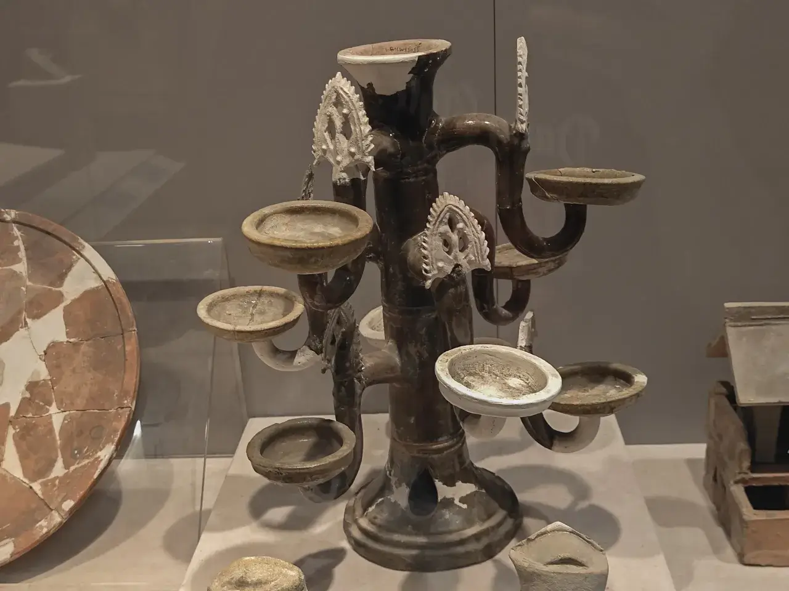
14:43 征乌桓！
曹操在北伐乌桓的途中路过无终（今蓟县）时当地人田畴提出经偏僻小道攻其不备的建议，并任向导。曹操获胜后，封田畴为亭侯，田畴虽坚辞不受但将其家属、亲友 300 余人迁往邺城（今河北临漳）。
14:46 安史之乱

渔阳——杜甫
渔阳突骑犹精锐，赫赫雍王都节制。
猛将飘然恐后时，本朝不入非高计。
禄山北筑雄武城，旧防败走归其营。
系书请问燕耆旧，今日何须十万兵。
长安欺人太甚😡！大燕替天行道😡！
反光太严重了……
14:46 天子渡口
1398 年，明朝开国皇帝朱元璋去世，其孙朱允炆继位。为了夺取朱允炆的帝位，1399 年，朱元璋四子朱棣（1360~1424）在北平（今北京）起兵南下。这是朱棣在天津三岔河口时的情景。
南京欺人太甚😡！大燕替天行道😡！
之后天津因此得名。
14:48 天津卫

雍正大帝
1644 年，清朝建立。1652 年，清政府将天津三卫合一，称天津卫。1725 年（清雍正三年），雍正皇帝批准将天津卫改为天津州，旋又升为直隶州；1731 年（清雍正九年），又批准将天津升为府。这是雍正皇帝。
直到清朝以后，天津总算开始有点发展了……
14:56 馆藏文物精品陈列
七七八八
天津博物馆馆藏了一些其他地方的文物，本来据说有天津海关缉私的金缕玉衣来着，没看到🤧。
15:03 乐高系列
LEGO
跟 pro 神都去过咯🥸！
15:06 中华百年看天津
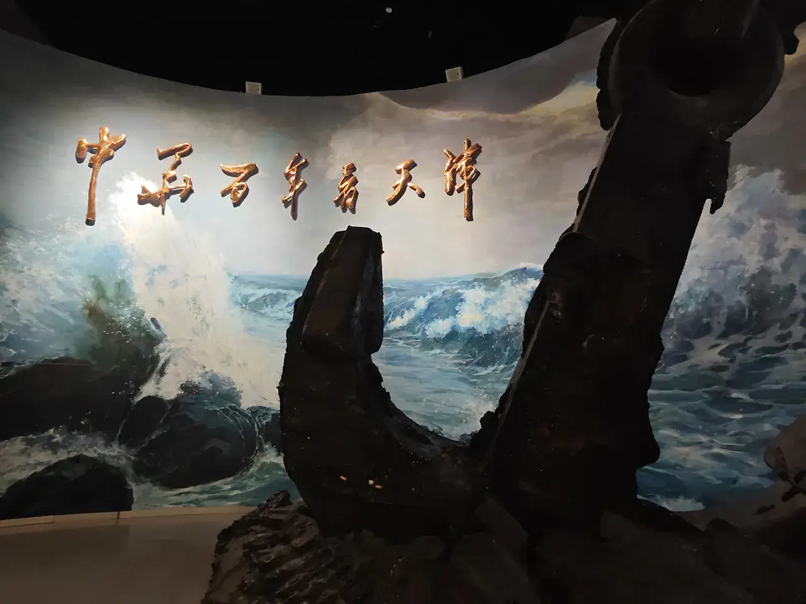
在天津被老外盯上以后，这片土地开始有了新的故事！
15:10 天津市长
张自忠（1891~1940）字荩臣。山东临清人。1911 年考入天津北洋法政学堂，同年参加同盟会。1931 年任国民革命军第 29 军 38 师师长。1933 年参加长城抗战，获喜峰口大捷。1936 年 5 月任天津市市长。1940 年 5 月在湖北宜城南瓜店与日军激战中壮烈殉国，被追授陆军上将衔。
15:11 大沽口之战
第二次鸦片战争中打了三次大沽口之战，第一次输，第二次算赢，第三次把天津输没了，后面北京就被占了🤧。
15:13 津海关
真品被京爷拿走了😭！
15:15 中华民国大总统
徐世昌、冯国璋、袁世凯、黎元洪、曹锟
大清的丧钟响起，现在是北洋政府的天下！
15:16 中华民国临时大总统
1912 年 1 月 1 日，孙中山在南京就任中华民国临时大总统。同年 8 月，孙中山自上海乘船来到天津。8 月 24 日孙中山在天津总站（今北站）乘火车前往北京。
孙文同志进京过程中停留过天津，值得塑一个像！
15:17 民国天津
天津特别市
在民国时期，天津是仅次于上海的全国第二城！
15:22 新中国天津
解放天津
平津战役，天津解放！
15:51 五大道尬骑🤩
之后就是找了个共享单车在五大道里瞎骑了，因为之前去过了，再加上自己对民国历史也不是很了解，所以兴致也就一般般了🥸。
再次参观了冀大旧址——五大道里的天津外国语大学！
五大道系列
又见到了上次跟 pro 神看到的埃菲尔铁塔！
17:06 即将日落
5.16 明十三陵
如果需要竖向排版文字：
1 | |
05:22 大早上
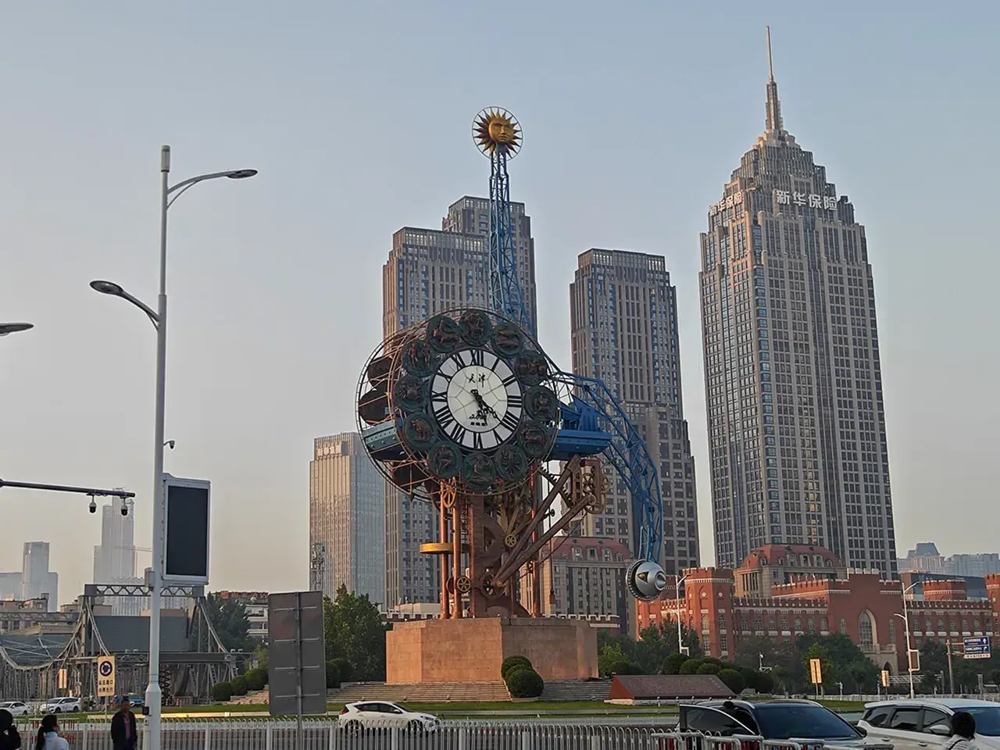
之所以把住宿地点置于天津站附近，是为了方便进北京罢了🥸。
05:27 天津站
购买车票 G8940 05:57 天津-06:29 北京南，￥54.5。这就是中国速度！只需要半小时就进京了。
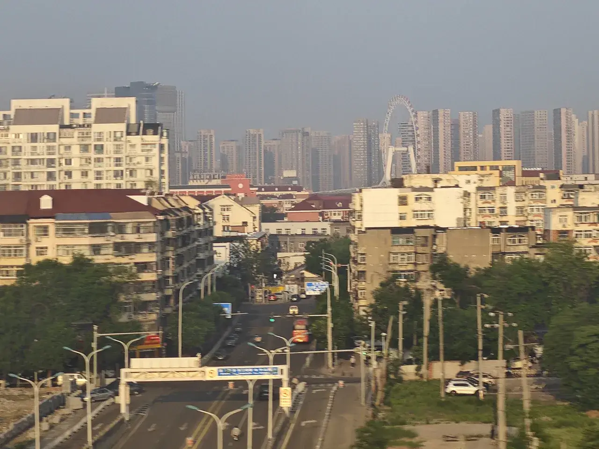
早上的车人特别少。
06:55 植发广告
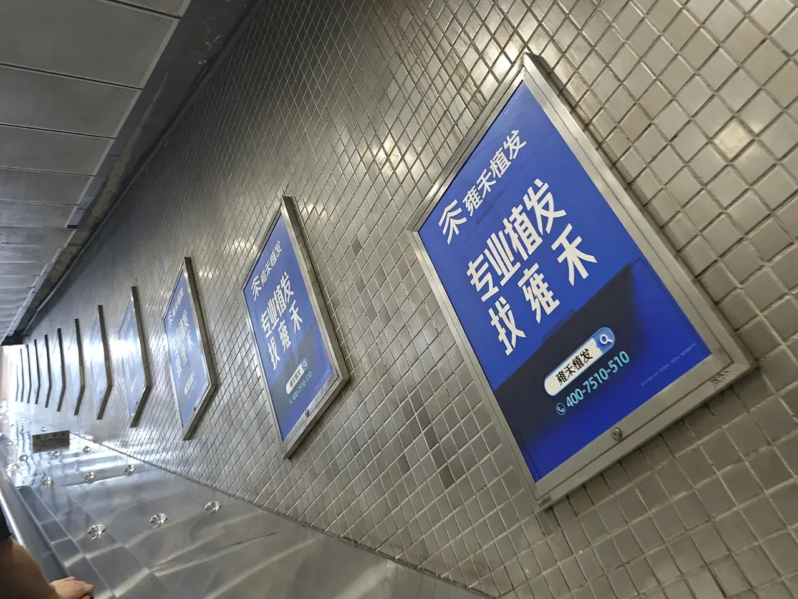
因为今天要去北京一个很偏僻的地方，午饭估计没地方吃，就从便利店里整了点三明治。
07:00 平安里站
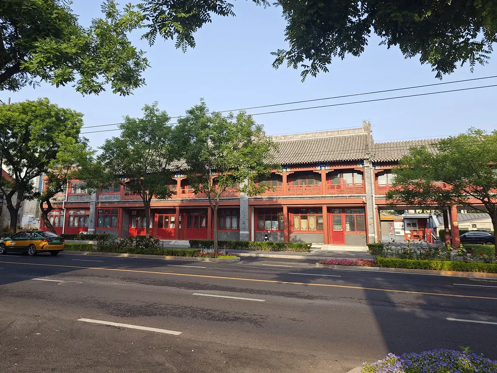
去明十三陵得乘 872 路，乘 872 路得到马甸桥南站上车，去马甸桥南站上车转地铁要么一转绕很大一圈，要么两转地铁，于是我索性地铁转公交了🤧。北京南站-4 号线大兴线-平安里站-平安里路口北站-143 路-马甸桥南站。
07:09 双层巴士
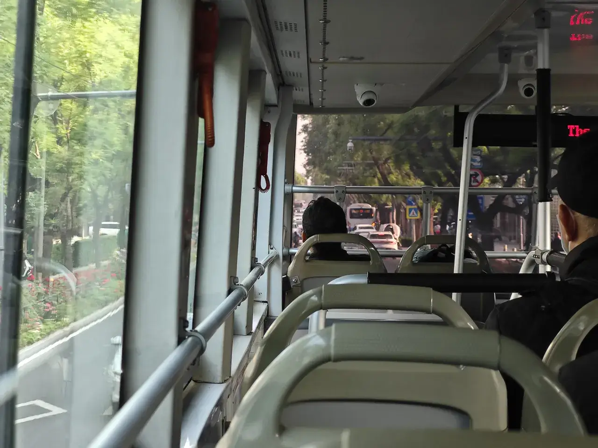
尽管才刚刚 7 点，但是北京就已经很堵了！坐公交真是太慢了！
07:23 旗开得胜
出老北京城了！
07:34 马甸桥南
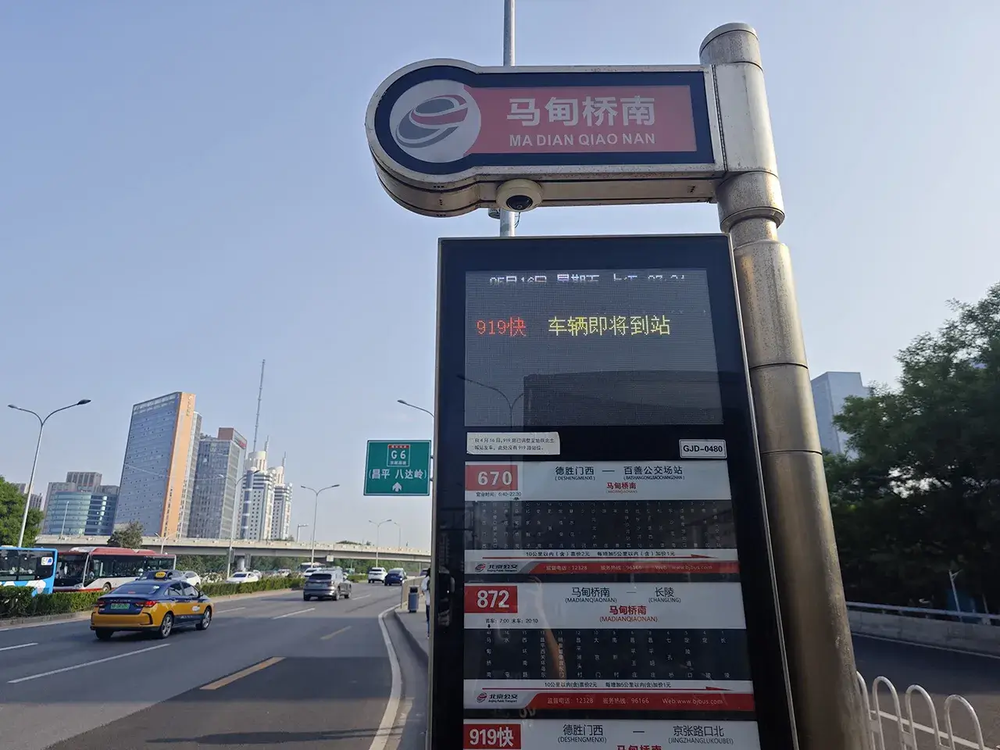
跟去八达岭一个逻辑，得坐长途公交去明十三陵。
幸运的是，明十三陵还是地处北京界，还有巴士给你坐，在河北保定的清西陵我都不知道咋走……
说是每半小时点发车，结果在一个不工整的 07:46 时间上，872 路到了。
08:54 明大红门🤩
就是这里了！
大红门坐落在陵区南面龙虎二山之间的一个高岗地上 造型宏大 市天寿山陵区的总门户 门前两侧各有一座下马碑上刻有官员人等至此下马八个大字
明十三陵有五个地方可以参观，大宫门，神道，定陵，长陵和昭陵。大宫门不要票可以白嫖，后面四个可以买明信片联票进去，￥98。南方小土豆好不容易来一次肯定要玩个全套😍！（据说康陵归村里管，给点钱也能去，太远了下次也不一定）
马甸桥南-872 路-大宫门，到站了就我一个下车，还差点让我怀疑是不是导航出错了😵，或许他们直接奔着里面的陵去的吧。
公交车中间过了石牌坊不停车，看到了，没拍照，错过了。
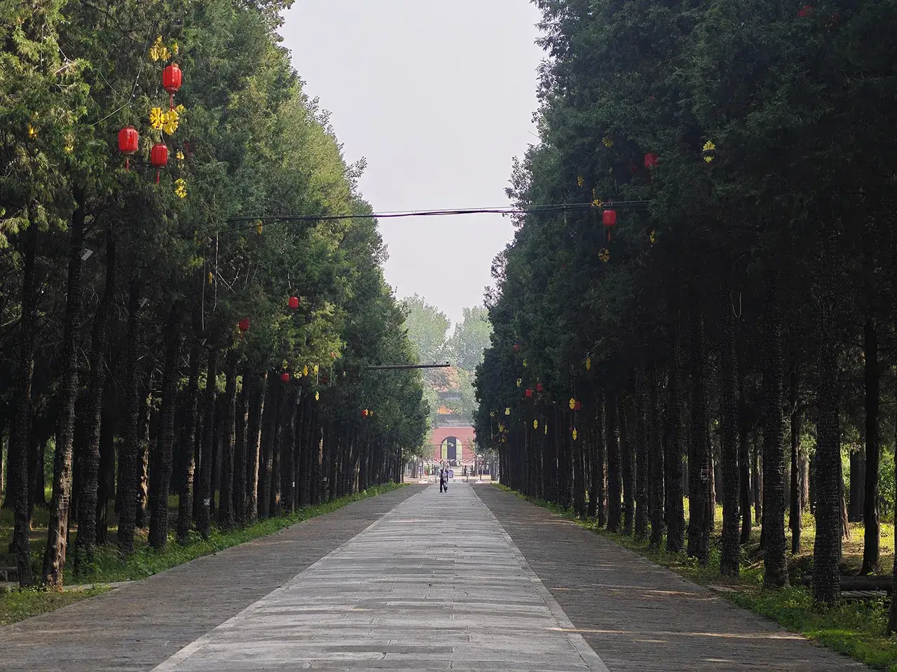
09:08 神功圣德
又一红楼
亭中设立神功圣德碑 以彰显皇帝生前的功德 由仁宗皇帝撰写 三千余字 将明成祖一生的功德推崇到极点 而其余各陵却是未镌刻文字的无字碑
四叔太有功德了！
09:17 明陵神道🤩
买票进园！
超长图片警告！！！
超长图片警告！！！
超长图片警告！！！

神道石像生
陵墓前设立石像生 象征死者生前的仪卫 并利用猛兽 神兽驱除妖魔鬼怪以保墓葬的安全 长陵神道石像生共十八对雕刻精美细致是古代石雕像艺术的珍品
在强迫症的驱使下，把神道上的所有石像生都拍了遍🤤，东边的石像生全部逆光了，没有办法😇。
10:06 定陵石桥🤩
无视要拉黑车的大爷，本来打算先去长陵，结果去定陵的车昌 67 路先来了，上车。
公交车到了定陵道口站我以为到站了，就下车了，查了一下应该是定陵站下🤧。只得再等一个巴士。
昌 67 路只能用微信北京一卡通刷，不带昌的公交又只能用支付宝刷，那可真蠢。
好吧，最后还是顺利到了定陵。
10:09 定陵石碑
万历皇帝的神圣功德：无
是个无字碑，好像之前是被闯王砸了。
10:17 拜访定陵
万历大帝！俺来了！
10:23 地宫文物

代表着腐朽的封建统治者压迫伟大的劳动人民的罪证！！！
郭沫若干的！虽然破坏了很多文物，但也因此有幸能让我这个刁民有生之年看到更多明朝皇家的东西🤧。
定陵博物馆里的凤冠是十二龙九凤，比国博的九龙九凤还大一点😍。真是太好看了！忍不住多拍一点。
10:30 万历龙袍
百子衣
这玩意刚一挖出来就氧化腐败了，只能看个仿品了🤧。
这个万历皇帝说很欢迎我接下来去看他的地宫😍。
10:32 定陵明楼
明楼
明楼是宝山城的城楼 也是整个寝宫建筑群的制高点 明楼的匾额上书的是陵名 亭中设立圣号碑 刻写该皇帝的圣号明楼是陵墓的标志建筑
坟前的明楼修得简直告诉盗墓贼快来挖🤧。不过整个清朝都没有试图打开地宫，最后居然在解放后被撬开了！
10:38 定陵坟头
大土堆
10:45 地宫入口
地宫入口特别深，要下去走好几个台阶。
有想过进地宫后手机会不会掉信号，还真是。
10:48 地宫棺床
好多钱钱
中式的地宫上居然挂上了西式的吊灯😇！
万历皇帝连自己的坟都保不住，就别指望保佑往棺床上撒钱的人了！
10:50 见棺发财
原来的棺材被烧掉了😭！太可惜了只好候补几个新的。
10:52 地宫宝座
大椅子
如果万历和孝靖孝端在棺材里躺累了，可以爬起来坐一会儿。
10:54 大金刚墙
非常厚实的金刚墙，敌不过官方考古大队。
10:57 登上明楼
登高望远
啊！河北北平😭！今天全是雾霾😭！
旁边还能听到两个中国人在英语对话，看着是很有文化的人了。
11:11 猫咪猫咪

守陵の猫
定陵外面有很多猫咪。广播说这些猫都是流浪猫，不要上手去摸，意思就是被挠了他们不负责吧🥱。刚好在这里想把三明治吃了，结果猫猫就全部凑过来，保安就继续强调会有很多人特意带食物过来喂猫，但是千万不要摸不要摸不要摸！
11:34 拜访长陵🤩
拜访永乐大帝！
乘公交去长陵或是昭陵，长陵车先到，去长陵。
长陵是朱棣的陵寝，本来郭沫若还想接着挖的，但是定陵挖的实在是稀巴烂就不被允许了🥱。
检票处有个老外迷路了，检票员还听不懂她说英语，还请我帮忙，随便扯了两句，沟通成功🥸！
11:40 长陵石碑
乾隆大帝到此一游
期间蹭了个讲解，说这个驮着石碑的是龙和龟的后代。这个石碑上写着乾隆对永乐的评价，将满文写在了左边，汉文写在了右边，表示满比汉高一等🤧。
11:41 长陵建筑
永乐大帝
长陵是明十三陵中最大的一个陵了，所以里面有好多建筑，真是太能盖了！
现在北京城里很多东西都是永乐年间盖起来的，如此大兴土木让我觉得在所谓的永乐盛世里的老百姓其实也挺惨的🤧。
11:46 棱恩殿内
棱恩殿里展示着永乐年间发生的各种事情，郑和下西洋呀巴拉巴拉，里面摆的东西都是假的。
这个凤冠一眼假。
11:50 长陵明楼


登高望远 x2
这个石碑居然刻着是明成祖而不是明太宗，不知道是啥时候刻的。
石碑被人刻满了到此一游😠！
撤！
12:26 拜访昭陵🤩
本来查了下去昭陵也有公交，不过好慢得一个多小时才一班，不等了爆个金币打车吧，￥12.59。
这就是昭陵！
明穆宗的名气明显不如永乐和万历，因此人也好少，我甚至都说不出他在任期间干了啥事🥱（好吧后来查了下这人就是那位吃春药吃死的）。
12:28 祭祀文化
烹羊宰牛且为乐
皇帝就是这么祭祖的！
12:31 昭陵后山

后山
前面两个陵还没有绕着坟头转一圈呢，就在昭陵后山上转一圈好了。

这个石碑有点朽烂了。怕倒下还用绳子栓死。
12:46 廉政主题


烈火焚烧若等闲
昭陵旁边还有一个介绍明朝清官的展馆，全是甲醛味😭！里面就认识一个于谦。
为大明鞠躬尽瘁，最后要是不识时务，还是得被杀头，这不是一个好的教育案例🥱。
12:58 昌平农村
昭陵真是太偏了！还要穿过昭陵村才能到公交车站。
等公交的过程中觉得还是太慢了，同时觉得坐公交进北京要等好久的车，还是爆个金币打车去地铁站吧，￥21.25。
结果等出租的时候公交到站了🤨。
13:24 明陵地铁
这个地铁站一直被人诟病，说是离真正的所谓的明十三陵景区太远了，一下车就有一堆黑车大爷来打招呼，坑的一比。其实这里离神道的距离还行，可以直接选择打车去神道。
北京昌平线经过了大名鼎鼎的牛马车站——北京海淀西二旗！下车去看看之前给我发 offer 的牛马公司🫡！
14:08 牛马车站
下车后直接登个共享单车假装上班。
14:19 朝十晚十
还有七个半小时就下班了😭！
14:33 大厂基地
胸有激雷而面如平湖者，可拜上将军！
骑个共享单车继续逛逛，参观一下大厂！还见到了之前跟 pro 神一起参加招聘会的地方。
本来还想去看看 pro 神的公司，实在是太偏僻了，查了下过去都得一个半小时，再回来回天津的车都赶不上了，下次一定😭。
15:02 清河车站
早上发现北京回天津的车票没了！只好点候补，候补到了 C2253 17:07 北京南-17:50 天津，￥54.5。看着时间差不多了，撤！
还想着从清河站直接坐动车回北京南站，查了下根本就没有轨道通车😕。只好地铁站站乐，清河站-13 号线-西直门-4 号线大兴线-北京南站。
16:51 京津城际

到北京南站还是早了一个小时，想着京津通勤应该跟广莞通勤一样，能够改签到一个马上能上车的车次，结果发现全部售罄，候补也补不上🤒，查了下每天都有两万多个牛马京津往返，高铁线路早就饱和了。
只好站台玩手机一小时了。
18:00 海河
俺都从北京到天津了，却还有四个小时就下班了😭！
不玩了，直接洗澡睡觉。